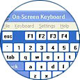

Index
This list is for reference purposes only and does not reflect endorsement by the IDRC.
Description
A great number of people are unable, for various reasons, to use a standard keyboard. These reasons can range from limited degree of movement or motor control to low strength in the hands and fingers. For many people an alternative physical keyboard can solve these problems, but for others the best solution is to use a virtual or onscreen keyboard. An onscreen keyboard generally appears on the same display used for programs and will remain permanently visible. The keyboard can then be accessed using the pointer device. In the simplest sense this means a standard mouse, but through the use of alternative mouse devices or switches a large number of disabilities can be addressed.
Points to Ponder - Questions to consider when shopping for or choosing an onscreen keyboard
- Does it support a large variety of input devices, including switches?
- Have you considered whether it is an onscreen keyboard or an alternative physical keyboard which will best suit your needs?
- Is the layout customizable?
Windows Solutions
- Windows XP On-screen Keyboard
- Windows XP actually has a very robust onscreen keyboard built directly into it.
- The link above details how to access and use it.
- Onscreen Virtual Keyboard
- A fully customizable commercial onscreen keyboard for Windows 98(or more recent versions).
- Available for a free 30-day trial
- SofType
- An onscreen keyboard for Windows 95(or more recent versions).
- A free demo is available.
- Visual Dynamic Keyboard (VDK)
- An onscreen keyboard developed by the Adaptive Technology Resource Centre.
- Not currently available as a standalone technology.
- Integrated as part of Web-4-All.
- OnScreen
- Onscreen is a graphical onscreen keyboard.
- It provides word completion and word prediction.
- It is fully customizable and supports macros.
- A free demo is available from their website.
- WiVik
- Wivik is an onscreen keyboard that has existed for quite a long time.
- It is customizable and supports word prediction and abbreviation expansion.
- Wivik is available in 22 languages.
- A free demo can be downloaded from their website
- Click-n-Type
- This is a free onscreen keyboard for Windows 95(or more recent versions).
- It is customizable and provides foreign language support.
- Virtual On-Screen Keyboard by MiloSoft
- A free onscreen keyboard for Windows
- Reach Interface Author
- A customizable onscreen keyboard for Windows
- Provides macro support
- A free demo can be downloaded from the website.
- Onscreen Keyboard
- A simple open source onscreen keyboard for Windows NT.
- Designed particularly with pen-based computing in mind
- Extremely minimalist in terms of features
- Grid
- A customizable onscreen keyboard
- Provides predictive typing
- Provides smart menu scanning for faster program access
- ERICA Keyboards
- Allows you to type messages and enter text into any program running on your computer
- Hot Virtual keyboard - a lowcost customizable onscreen keyboard for Windows.
Macintosh Solutions
- Discover: Envoy for Mac
- Fully customizable onscreen keyboard with audio feedback
- Supports switch access as well as a variety of specialized hardware.
- Keystrokes 2 (Mac OS 7.1 to OS 9.2) and Keystrokes 3 (Mac OS 9 and Mac OS X)
- Support customization, word prediction and multiple languages
- SwitchXS (Mac OSX 10.2 or 10.3)
- Offers full mouse and keyboard emulation where user can move the cursor, click, and type into all standard Mac applications.
- Advanced control over features such as audio-cueing, speech-cueing, key repeat, scanning speed and cycling, mouse speed and movement
- Works with any HID compliant USB gamepad, joystick, keyboard and also USB switch interfaces
- Virtual Keyboard (Mac OS X)
- Offers point-and-click typing using pointing devices such as head pointer, mouse,trackball, etc
Unix/Linux Solutions
- GOK
The GOK (GNOME On-screen Keyboard) project is an open source software development project designed to create advanced alternative input solutions for the linux/unix environment.
Resources
- A Comparative Overview of On-screen Keyboards
- A very useful chart detailing exactly which features are provided by which on-screen keyboards
- Introducing On-Screen Keyboards
- A site which explains in great depth exactly what an on-screen keyboard is and how they are useful